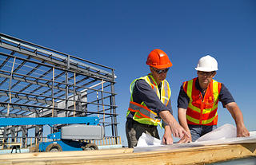

Bamboo's Architects, Technicians, Project Managers, and Builders are strong, flexible and versatile. The team lives and breathes designing and building, and works together to break through the barriers of what is often an arduous process for clients.
With Bamboo, construction is an inspiring, exciting process - from the first meeting to the last brush stroke, here is how it is achieved...
At Bamboo, design is far more than just aesthetics, it is about considering the bigger picture, and constructing something that will not only look great, but also stand the test of time.
A design is only as good as its craftsmen, and without a specialist team of highly skilled people to realise a beautiful design, it will only ever be just that.
Bamboo Construction's ethos of designers and craftsmen working together is a new concept in industry terms, which has telling results - the process from design through to construction is now a smooth one, allowing for difficulties to be quickly overcome, leading to much better results on every level.